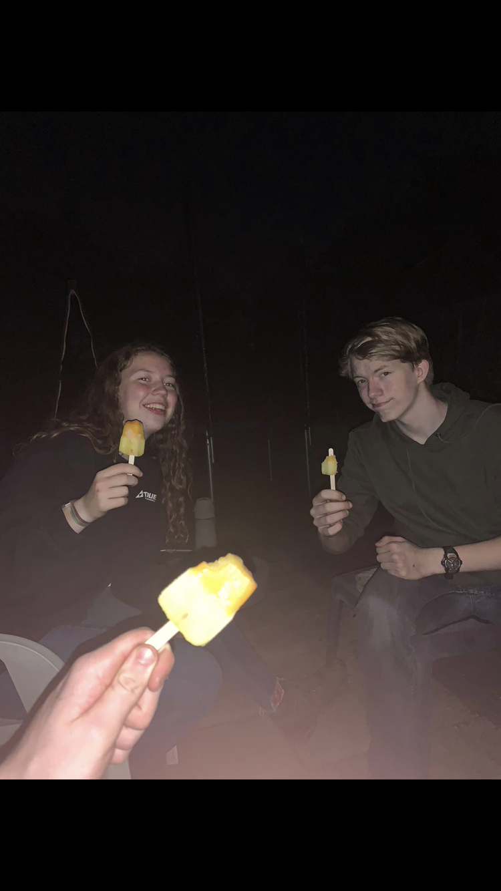
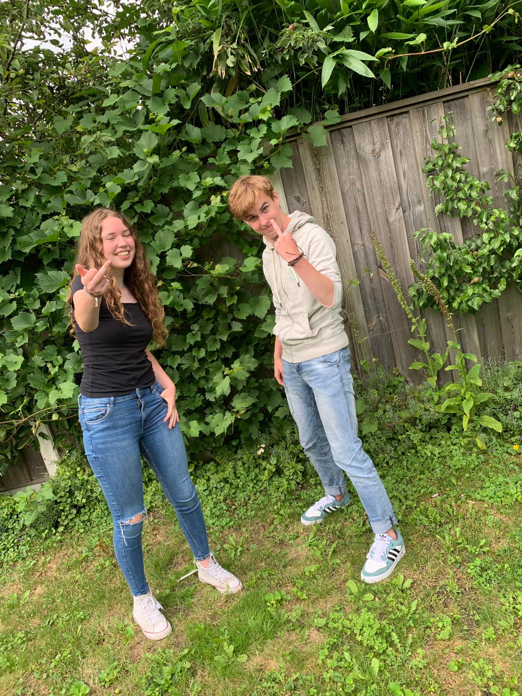
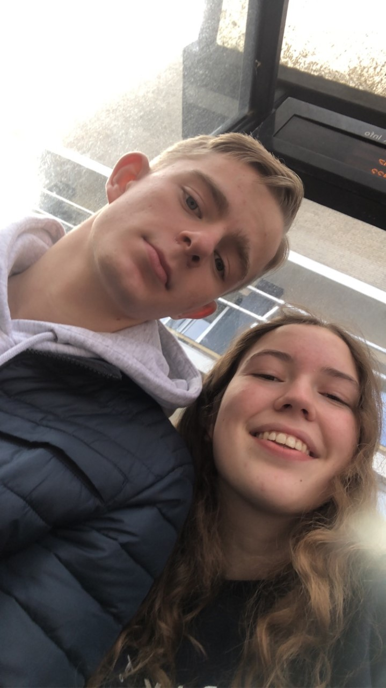

Aron <3 Lotte
Het begon allemaal in maart...
Toen begon Aron met Lotte te snappen, en ze hadden diepe gesprekken.
Daarna gingen ze samen heel veel Harry Potter kijken.
Daardoor begon Aron Lotte leuk te vinden. En lotte dacht dat ze aron ook leuk vond.
Maar toen realiseerde ze zich dat ze Aron helemaal niet leuk vond. Maar ze wou zijn hart niet breken.
Bij plaatje 1 zie je Lotte en Aron samen op de meest linkse foto.
Dus nu komen we op het volgende verhaal.
Stel je hebt het zelfde probleem als lotte doe het dan zo.
Merijn <3 Lotte
Doordat Lotte niet Arons hart wou breken had ze een slim plan bedacht.
Ze wou namelijk Aron hints gaan geven om hem te laten weten dat zij hem niet leuk vind.
Dus ging ze met de beste vriend van Aron een beetje klef doen...
Merijn, Aron vond dit niet zo leuk dus hij was een beetje verdrietig.
Maar toen begonnen Lotte en Merijn elkaar leuk te vinden.
Dat is jammer genoeg niks geworden.
Merijn en lotte staan samen op plaatje 2 (de middelste).
Daarom gaan we nu over op het volgende verhaal...
Lars <3 Lotte
Lotte's bestie Walijne moest nog een verjaardagscadeautje geven aan Lars.
Dus ze nam Lotte mee, want ze waren met elkaar aan het afspreken.
Dat was het moment dat Lotte en Lars elkaar voor het eerst hadden ontmoet.
Toen op dat moment had Lars Lotte's snap gefixt.
Dus vanaf toen begonnen ze met elkaar te snappen.
Op een gegeven moment kwamen ze erachter dat ze met elkaar in de jumbo werkten.
Dus toen hadden ze veel diepgaande gesprekken met elkaar.
Op een gegeven moment, gingen ze afspreken met elkaar.
Nadat ze vaker hadden afgesproken. Gingen ze samen films kijken.
Vanaf dat moment begonnen mensen hun te shippen.
dus toen vroeg Lars Lotte verkering. Maar Lotte heeft een relatiefobie (wat is dat?), dus ze zei nee.
Maar 2 weken later vond ze Lars toch wel super leuk. Dus toen nam ze verkering met hem.
En nu leven ze nog lang en gelukkig.
Zie plaatje 3, de meest rechtse.
  